Connecting restaurant guests and servers before the first hello.
Perfecti lets guests share their dining preferences with their server, so the conversation at the table starts with something real. I led a complete redesign and rebrand on a tight turnaround to deliver the MVP for iOS and Android.
- Role
- Lead product designer
- Team
- Led a second designer
- Timeline
- Aug – Nov 2026
- Platforms
- iOS + Android
- Tools
- Figma, Figma Make, Claude
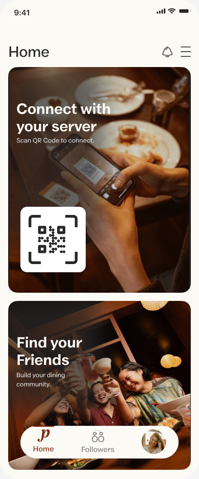
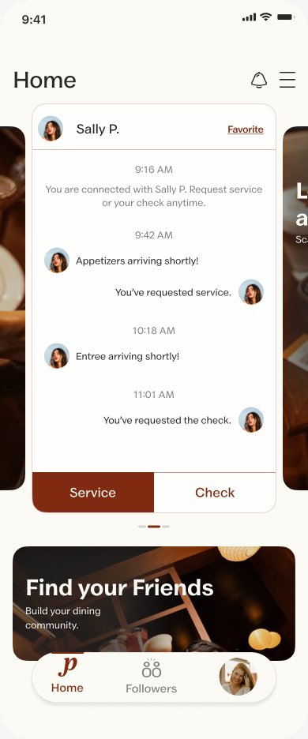
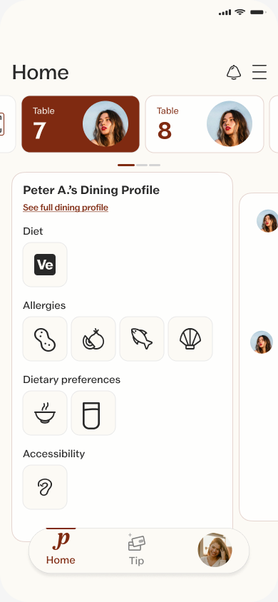
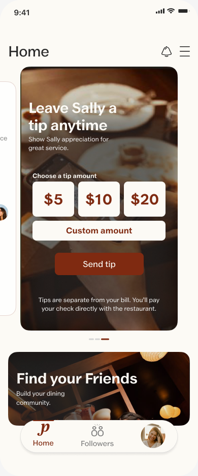
A full redesign, on an MVP timeline.
Perfecti connects guests and servers on another level. Guests share dietary needs, allergies and preferences, and servers see them before reaching the table, so every interaction starts with ease.
The founder had an earlier version of the app. We redesigned it completely, rethinking the user experience and the app's structure, and added a social layer, all on a tight turnaround to deliver the MVP.
Leading the design, the team and the timeline.
- Led the design end to end and managed a second designer
- Owned the timeline and milestones from kickoff to handoff
- Ran weekly stakeholder reviews with the founder
- Delivered the rebrand, the design system and the product screens
- 01Audit + inventoryReviewed the previous UI and mapped every screen, flow and state for the MVP.
- 02RebrandA new identity: logo, typography, color and photography direction.
- 03Design systemBuilt before any screens, for iOS and Android.
- 04Screens + prototypeRedesigned flows, high-fidelity screens and an interactive prototype.
- 05HandoffiOS first, then adapted for Android, with specs and tokens.
A brand that feels like the dining room.
Perfecti's palette comes from the table itself: warm neutrals, deep reds and olive greens. Brandy and Vanilla Custard anchor the system, with Unna carrying the big moments and Valley Sans handling everything people read and act on.
Components before screens.
We built the design system before designing a single screen, for both iOS and Android. It let two designers move quickly and stay consistent.
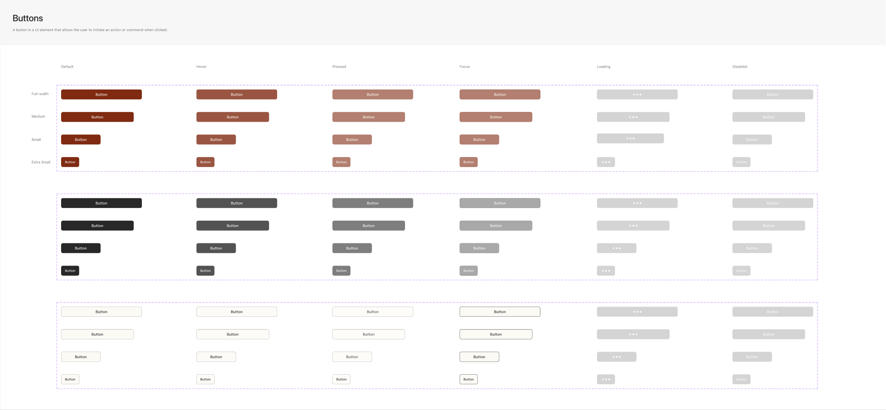
Preferences that start the conversation.
Guests build a dining profile once, with diet, allergies, preferences and accessibility needs. Servers see it before they reach the table, and both sides can connect, follow and leave compliments.
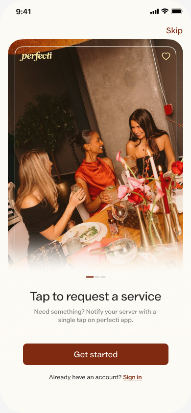
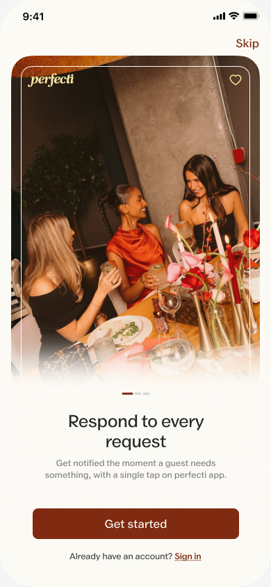
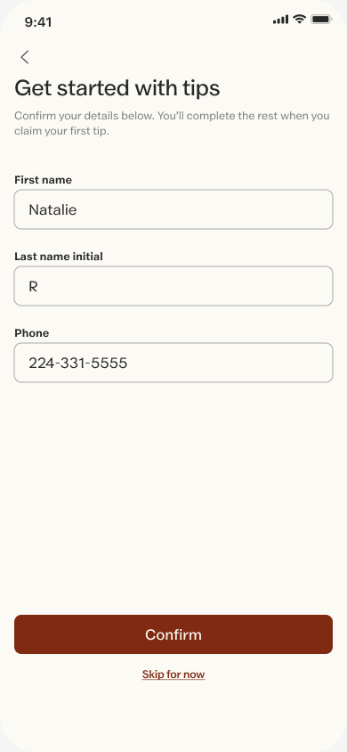
One question per screen.
Instead of one long form, onboarding asks guests a series of short, friendly questions. Each answer is a tap, every screen can be skipped with None, and the result is a dining profile the server reads before saying hello.
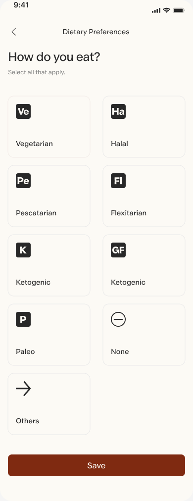
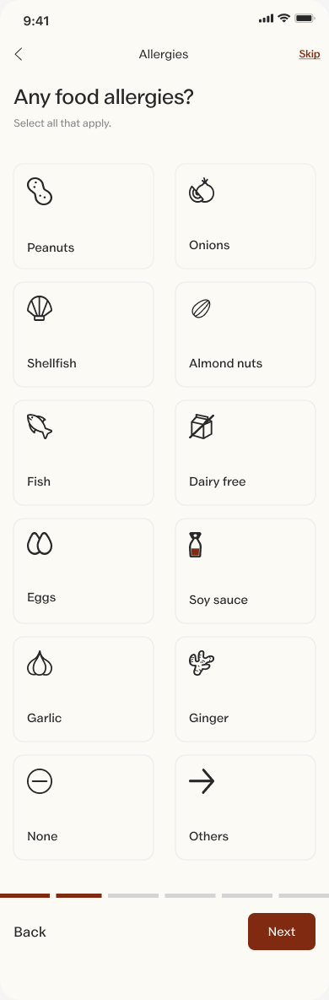
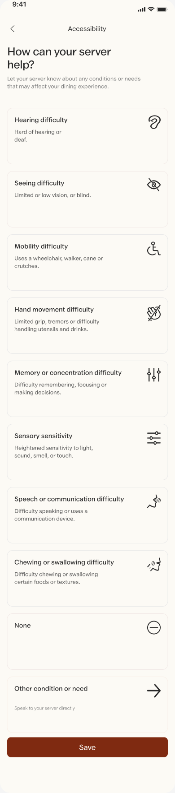
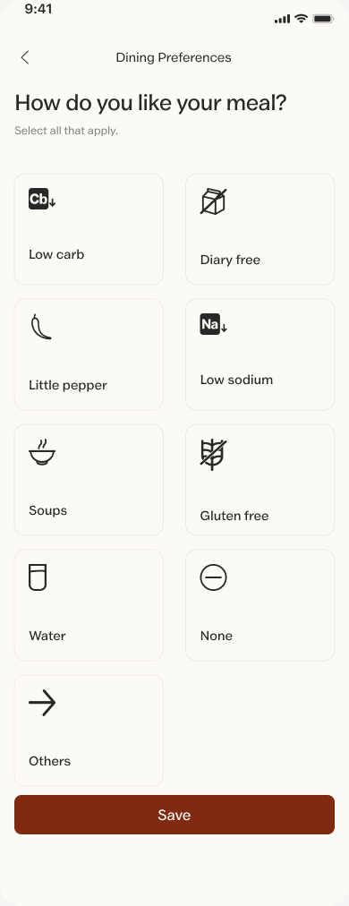
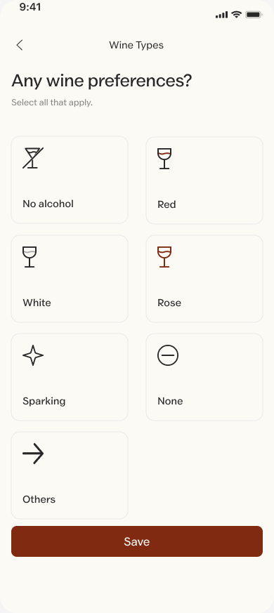
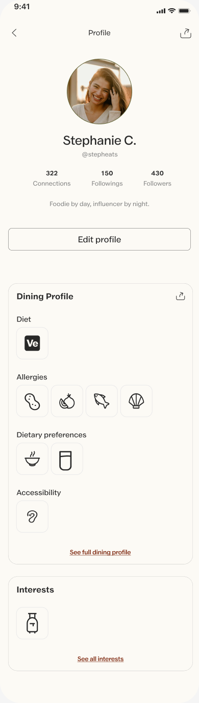
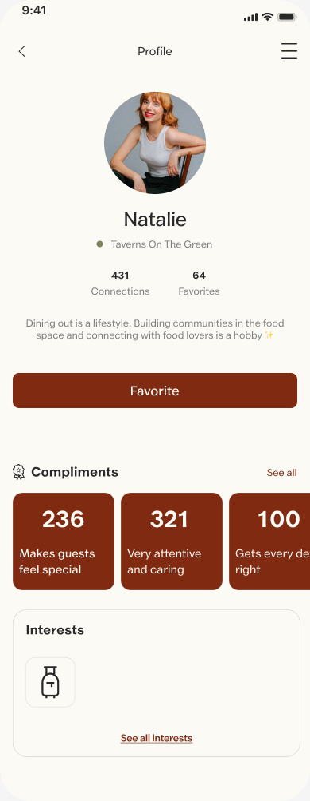
Every preference a guest shares becomes the start of a conversation.
Decisions that shaped the product.
Faster feedback, clearer alignment.
A new brand and a developer-ready MVP, ready to launch.
- RebrandLogo, typography, color system and photography direction
- Design systemComponents for iOS and Android, built in Perfecti's Figma workspace
- Screen + flow inventoryEvery screen, flow and state for the MVP, prioritized
- High-fidelity screens + prototypeGuest and server experiences, including the social layer
- Developer handoffSpecs, annotations, tokens and exportable assets
“On a tight timeline, the system is what lets you move fast. Building the brand and components first meant every screen after them came together quickly and consistently.”